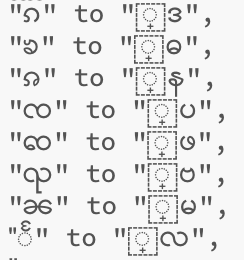
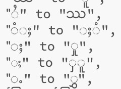
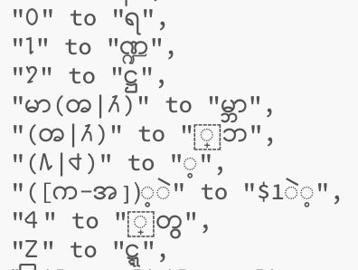
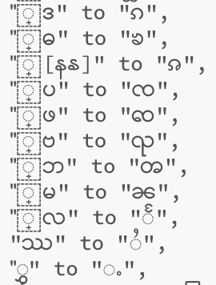

PangLong Converter
Case Study for characters conflict
Before you are asking me about why you do not build for burmese word in PL Converter. Please have a look below image for the problem.
The right side are Shan words in unicode. The left side are Burmese words in zawgyi-one. Zawgyi font take the Shan word Ka code for their Burmese word. Please have a look for more images below.
  Therefore, as you see Zawgyi was took from Shan word key code over 13 words. When Burmese word is corrected,Shan word must be not corrected.
I hope you will be understood from the images above. Thanks for your time that give attendion.
For Burmese Converter please click here to use Rabbit Converter.